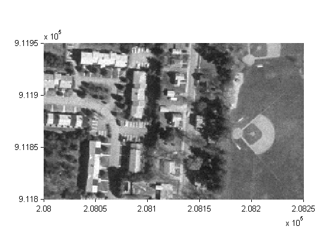
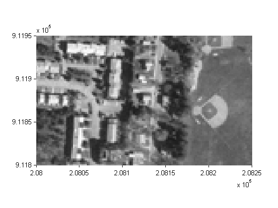
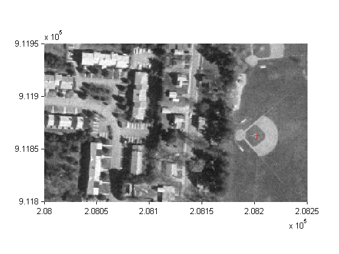
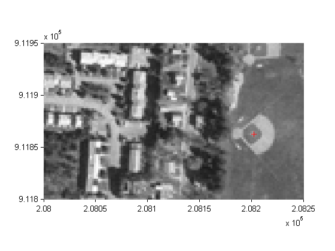

A referencing matrix allows you to specify how to spatially orient your data.
Create a referencing matrix for an image with square, four-meter pixels and with its upper left corner (in a map coordinate system) at x = 207000 meters, y = 913000 meters. The image follows the typical orientation: x increasing from column to column and y decreasing from row to row.
currentFormat = get(0,'format'); format bank x11 = 207002; % Two meters east of the upper left corner y11 = 912998; % Two meters south of the upper left corner dx = 4; dy = -4; R = makerefmat(x11, y11, dx, dy)
R =
0 -4.00
4.00 0
206998.00 913002.00
geoid contains a model of the Earth's geoid sampled in one-degree-by-one-degree cells. Each column of 'geoid' contains geoid heights in meters for 180 cells starting at latitude -90 degrees and extending to +90 degrees, for a given latitude. Each row contains geoid heights for 360 cells starting at longitude 0 and extending 360 degrees.
load geoid % Adds array 'geoid' to the workspace lat11 = -89.5; % Cell-center latitude corresponding to geoid(1,1) lon11 = 0.5; % Cell-center longitude corresponding to geoid(1,1) dLat = 1; % From row to row moving north by one degree dLon = 1; % From column to column moving east by one degree geoidR = makerefmat(lon11, lat11, dLon, dLat)
geoidR =
0 1.00
1.00 0
-0.50 -90.50
It's well known that at its most extreme the geoid reaches a minimum of slightly less than -100 meters, and that the minimum occurs in the Indian Ocean at approximately 4.5 degrees latitude, 78.5 degrees longitude. Check the geoid height at this location by using LATLON2PIX with the new referencing matrix:
[row, col] = latlon2pix(geoidR, 4.5, 78.5)
row =
95.00
col =
79.00
geoid(round(row),round(col))
ans =
-106.93
Create a half-resolution version of a georeferenced TIFF image, using Image Processing Toolbox functions ind2gray and imresize.
Read the indexed-color TIFF image and convert it to grayscale. The size of the image is 2000-by-2000.
[X, cmap] = imread('concord_ortho_w.tif');
I_orig = ind2gray(X, cmap);
Read the corresponding worldfile. Each image pixel covers a one-meter square on the map.
R_orig = worldfileread('concord_ortho_w.tfw')
R_orig =
0 -1.00
1.00 0
206999.50 913000.50
Halve the resolution, creating a smaller (1000-by-1000) image.
I_half = imresize(I_orig, size(I_orig)/2, 'bicubic');
Find the map coordinates of the center of pixel (1,1) in the resized image: halfway between the centers of pixels (1,1) and (2,2) in the original image.
[x11_orig, y11_orig] = pix2map(R_orig, 1, 1)
x11_orig =
207000.50
y11_orig =
912999.50
[x22_orig, y22_orig] = pix2map(R_orig, 2, 2)
x22_orig =
207001.50
y22_orig =
912998.50
Average these to determine the center of pixel (1,1) in the new image.
x11_half = (x11_orig + x22_orig) / 2 y11_half = (y11_orig + y22_orig) / 2
x11_half =
207001.00
y11_half =
912999.00
Construct a referencing matrix for the new image, noting that its pixels are each two meters square.
R_half = makerefmat(x11_half, y11_half, 2, -2)
R_half =
0 -2.00
2.00 0
206999.00 913001.00
Display each image in map coordinates.
figure h1 = mapshow(I_orig,R_orig); ax1 = get(h1,'Parent'); set(ax1, 'XLim', [208000 208250], 'YLim', [911800 911950],'TickDir','out') figure h2 = mapshow(I_half,R_half); ax2 = get(h2,'Parent'); set(ax2, 'XLim', [208000 208250], 'YLim', [911800 911950],'TickDir','out')
Mark the same map location on top of each image.
x = 208202.21; y = 911862.70; line(x, y, 'Parent', ax1, 'Marker', '+', 'MarkerEdgeColor', 'r'); line(x, y, 'Parent', ax2, 'Marker', '+', 'MarkerEdgeColor', 'r');
Graphically, they coincide, even though the same map location corresponds to two different pixel coordinates.
[row1, col1] = map2pix(R_orig, x, y)
row1 =
1137.80
col1 =
1202.71
[row2, col2] = map2pix(R_half, x, y) format(currentFormat);
row2 =
569.15
col2 =
601.60
concord_ortho_w.tif, concord_ortho_w.tfw - derived from orthophoto tiles from:
Office of Geographic and Environmental Information (MassGIS), Commonwealth of Massachusetts Executive Office of Environmental Affairs http://www.state.ma.us/mgis
For more information, run:
>> type concord_ortho_w.txt